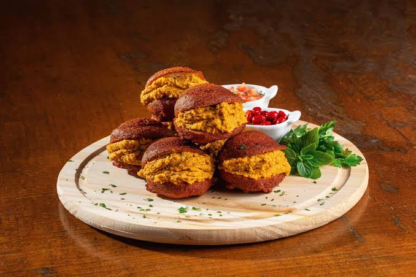
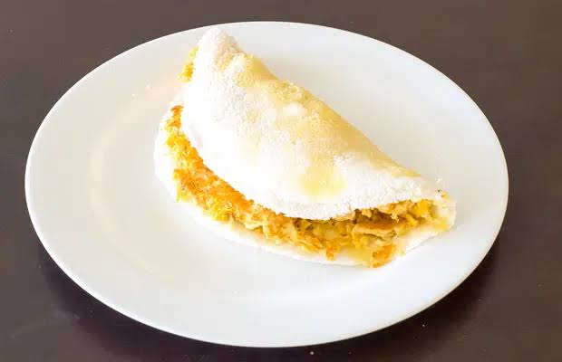
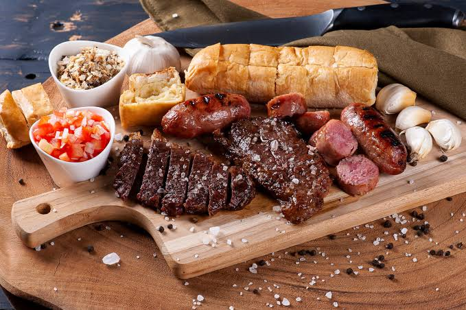
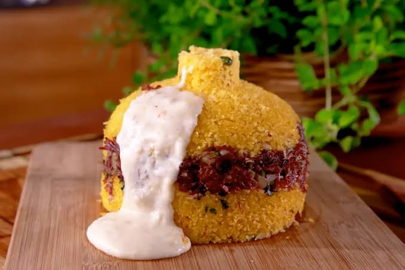
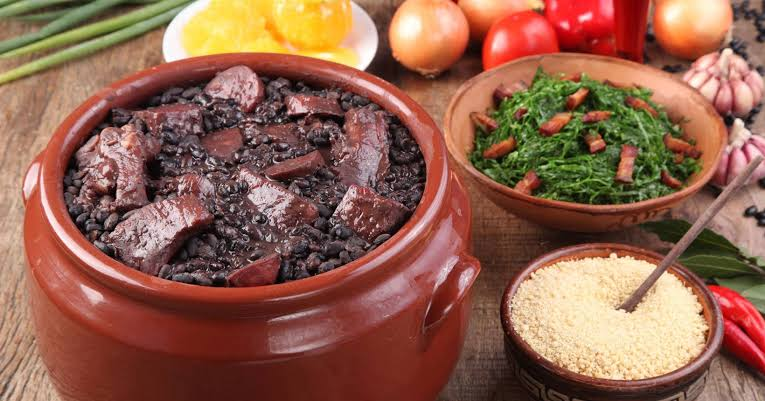

Sobre Comidas Típicas Do Brasil
A culinária brasileira possui uma identidade profunda que vai muito além das receitas conhecidas internacionalmente. A base de toda essa gastronomia se sustenta no uso diário do arroz e do feijão, uma combinação que une o país de norte a sul, variando apenas o tipo do grão de acordo com o estado. Outro pilar fundamental é a mandioca, também chamada de aipim ou macaxeira, um ingrediente herdado dos povos indígenas que se transforma em farinha para acompanhar as refeições, em polvilho para a produção do pão de queijo e em goma para o preparo da tapioca.Na culinária do dia a dia e das celebrações, os pratos carregam as marcas da colonização portuguesa, da forte herança africana e da ancestralidade indígena. A feijoada se consolidou como o prato nacional por excelência, misturando o feijão preto com carnes suínas e acompanhamentos como couve refogada e laranja. No litoral do Nordeste, o azeite de dendê e o leite de coco dão personalidade a preparos como a moqueca e o acarajé, enquanto no Norte o tacacá aproveita o tucupi e o jambu para criar uma sopa que causa uma sensação única de dormência na boca. Mais ao sul, a cultura dos pampas introduziu o churrasco e o arroz carreteiro na rotina alimentar.O paladar para os doces também reflete a história do país, fortemente ligada ao período da exploração da cana-de-açúcar. O brigadeiro se tornou o doce mais popular e obrigatório em aniversários, feito de maneira simples com leite condensado e chocolate. Da mesma forma, combinações que misturam o doce com o salgado, como a goiabada com queijo, ilustram a criatividade da cozinha caipira e mineira. Para acompanhar essas refeições, a caipirinha de limão com cachaça representa o coquetel mais tradicional, ao passo que o café coado encerra os encontros e simboliza a hospitalidade em qualquer lar brasileiro.
Galeria de fotos





Modos de Preparo
Feijoada
Ingredientes: Feijão preto, carne-seca, linguiça calabresa, costelinha de porco, bacon, alho, cebola, folhas de louro, sal e pimenta-do-reino. Modo de preparo: Deixe o feijão de molho por algumas horas. Em seguida, cozinhe o feijão junto com as carnes até que estejam macias. Em outra panela, refogue o alho e a cebola e adicione ao feijão. Acrescente as folhas de louro e os temperos e deixe cozinhar por mais alguns minutos, até o caldo ficar encorpado. Sirva quente, acompanhada de arroz branco, couve, farofa e laranja.
Acarajé
Ingredientes: Feijão-fradinho, cebola, sal, azeite de dendê, camarão seco, vatapá e pimenta a gosto. Modo de preparo: Deixe o feijão-fradinho de molho e retire suas cascas. Depois, triture os grãos junto com a cebola até formar uma massa. Bata bem a massa para deixá-la leve e aerada. Modele os bolinhos com uma colher e frite-os em azeite de dendê bem quente até ficarem dourados. Corte os acarajés ao meio e recheie com vatapá, camarão seco e pimenta.
Pão de Queijo
Ingredientes: Polvilho doce ou azedo, queijo meia-cura ou parmesão ralado, leite, ovos, óleo e sal. Modo de preparo: Aqueça o leite com o óleo e o sal. Despeje a mistura quente sobre o polvilho e mexa bem. Quando a massa estiver morna, acrescente os ovos e o queijo ralado, misturando até formar uma massa homogênea. Faça pequenas bolinhas e coloque-as em uma assadeira. Leve ao forno preaquecido a 180 °C e asse por aproximadamente 25 minutos, ou até que os pães de queijo estejam dourados. Sirva ainda quentes.